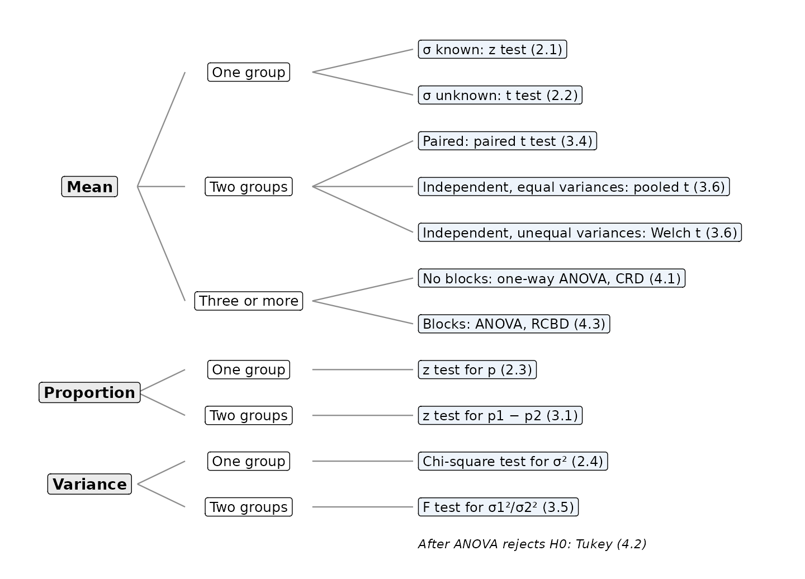

Summary | 208272 Elementary Statistics for Social Sciences II
Every problem in this book answers the same three questions:

| Method | Test statistic | Distribution | R |
|---|---|---|---|
| Mean, \(\sigma\) known | \(z = \dfrac{\bar{x}-\mu_0}{\sigma/\sqrt{n}}\) | \(z\) | – |
| Mean, \(\sigma\) unknown | \(t = \dfrac{\bar{x}-\mu_0}{s/\sqrt{n}}\) | \(t\), \(n-1\) | t.test(x, mu = ) |
| Proportion | \(z = \dfrac{\hat{p}-p_0}{\sqrt{p_0(1-p_0)/n}}\) | \(z\) | – |
| Variance | \(\chi^2 = \dfrac{(n-1)s^2}{\sigma_0^2}\) | \(\chi^2\), \(n-1\) | – |
| Two proportions | \(z = \dfrac{\hat{p}_1-\hat{p}_2}{\sqrt{\bar{p}(1-\bar{p})(1/n_1+1/n_2)}}\) | \(z\) | – |
| Paired means | \(t = \dfrac{\bar{d}}{s_d/\sqrt{n}}\) | \(t\), \(n-1\) | t.test(x1, x2, paired = TRUE) |
| Two variances | \(F = s_1^2/s_2^2\) | \(F\), \((n_1-1, n_2-1)\) | var.test(x1, x2) |
| Two means, pooled | \(t = \dfrac{\bar{x}_1-\bar{x}_2}{\sqrt{s_p^2(1/n_1+1/n_2)}}\) | \(t\), \(n_1+n_2-2\) | t.test(x1, x2, var.equal = TRUE) |
| Two means, Welch | – | \(t\) | t.test(x1, x2, var.equal = FALSE) |
| ANOVA (CRD) | \(F = \text{MSTr}/\text{MSE}\) | \(F\), \((k-1, N-k)\) | summary(aov(y ~ trt)) |
| ANOVA (RCBD) | \(F = \text{MSTr}/\text{MSE}\) | \(F\), \((t-1, (t-1)(b-1))\) | summary(aov(y ~ trt + block)) |
| Tukey | – | – | TukeyHSD(model) |
For each study, name the parameter(s), the method and the section.
Use \(\alpha\) = 0.05 and the five steps.
In a survey of 500 workers, 210 have a second job. Test whether more than 40% of workers have a second job. Use the critical region.
The monthly profit (thousand baht) of 9 cafés in the old city has \(\bar{x}\) = 52.4, \(s\) = 6.1; that of 13 cafés near the university has \(\bar{x}\) = 47.8, \(s\) = 5.4. (a) Use the \(F\) test with the critical region to check the variances. (b) Test whether the mean profits are different, using the critical region.
A central bank wants the standard deviation of the monthly inflation rate to be less than 1 percentage point. Over 15 months, \(s\) = 0.8. Assume normality and test whether the target is met, using the critical region.
Eight households installed solar panels. Their monthly electricity bills (baht) before and after installation were recorded. Did the mean bill decrease?
Paired t-test
data: bill_after and bill_before
t = -4.4458, df = 7, p-value = 0.001493
alternative hypothesis: true mean difference is less than 0
95 percent confidence interval:
-Inf -216.6301
sample estimates:
mean difference
-377.5 Twenty stores are randomly assigned to four advertising channels (TV, Online, Radio, Print), five stores each, and weekly sales are recorded. (a) Test whether mean sales differ among the channels. (b) If they do, which channels differ?
Df Sum Sq Mean Sq F value Pr(>F)
channel 3 466 155.33 13.08 0.000142 ***
Residuals 16 190 11.87
---
Signif. codes: 0 '***' 0.001 '**' 0.01 '*' 0.05 '.' 0.1 ' ' 1 Tukey multiple comparisons of means
95% family-wise confidence level
Fit: aov(formula = sales ~ channel)
$channel
diff lwr upr p adj
Online-TV 1.52 -4.714923 7.754923 0.8965475
Radio-TV -9.02 -15.254923 -2.785077 0.0038601
Print-TV -8.64 -14.874923 -2.405077 0.0055055
Radio-Online -10.54 -16.774923 -4.305077 0.0009438
Print-Online -10.16 -16.394923 -3.925077 0.0013384
Print-Radio 0.38 -5.854923 6.614923 0.9980348The mean household size in a district is estimated from 20 households: \(\bar{x}\) = 3.42, \(s\) = 0.58. Construct a 95% confidence interval for the mean household size.
A full conclusion has a decision and an interpretation in the words of the problem:
Decision. [statistic or p-value] … so we [reject / accept] \(H_0\). Interpretation. That is, … at the 0.05 level of significance.
Checklist:
Write the decision and the interpretation for each result.